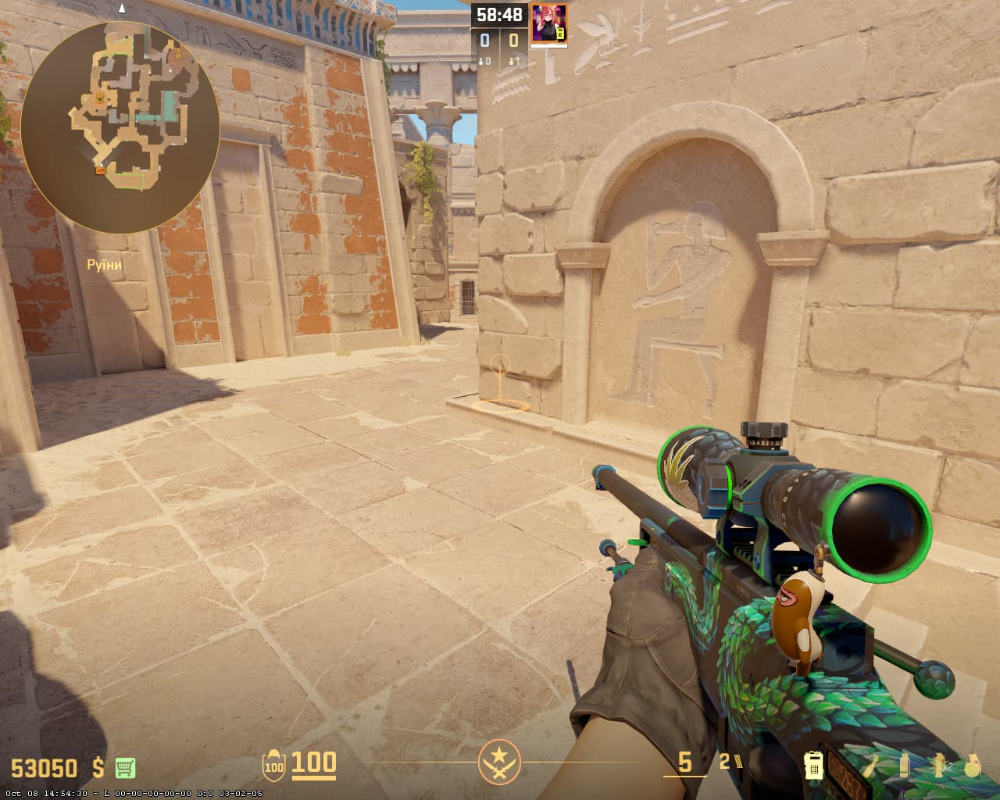
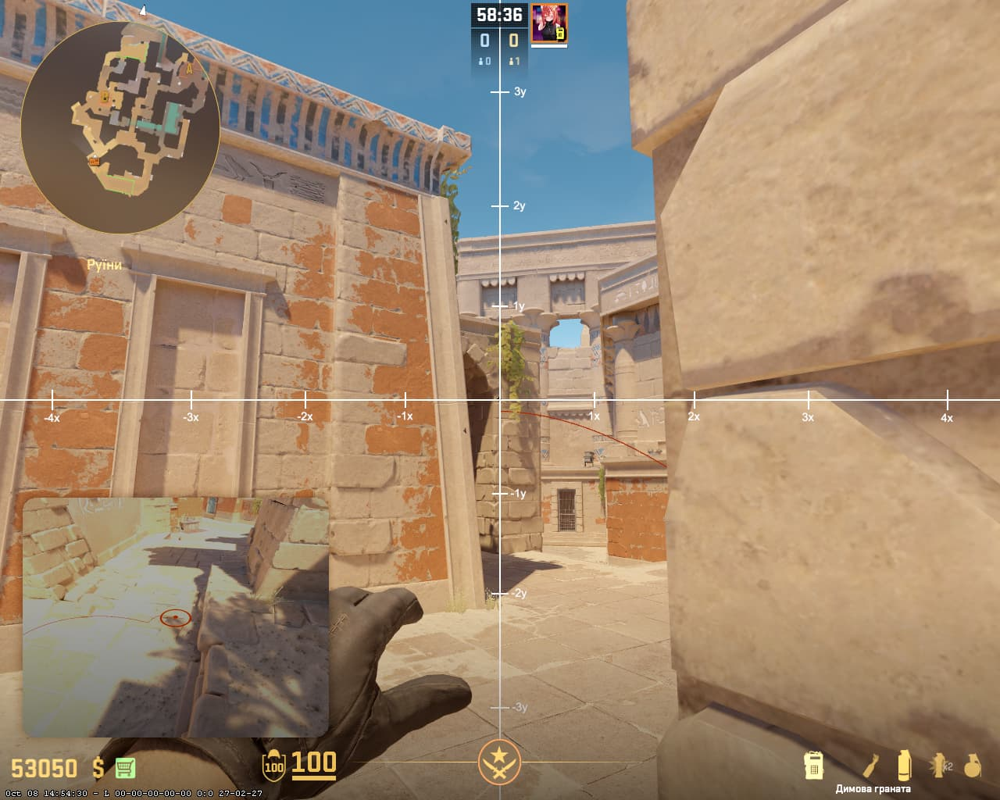

📍 Натискай на будь-яку картинку, щоб збільшити її. Зірочка зберігає позицію в обране, а око ховає її вниз із можливістю відновлення.
💣 ПАРНИЙ РОЗКИД НА B SITE (ОБИДВА СМОКИ)
1️⃣ Перший смок
📍 Ставай тут

🎯 Куди цілитись

2️⃣ Другий смок
📍 Ставай тут

🎯 Куди цілитись

3️⃣ Результат кидка
💥 Куди падають смоки

⚡ ТИП КИДКА ДЛЯ ОБОХ СМОКІВ: LKM + JUMPTHROW